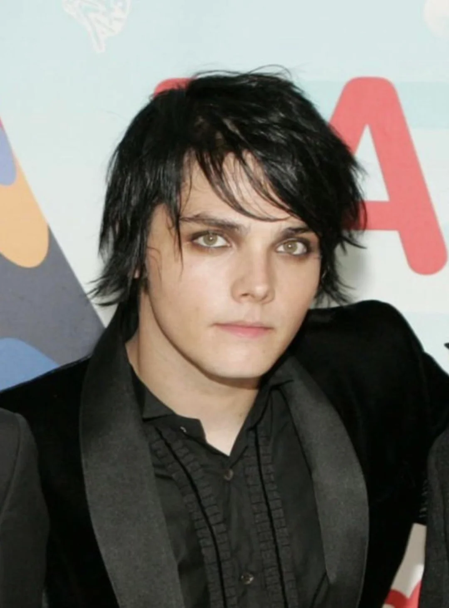

Gerard en 2002
Revenge Era (2004)

Gerard en 2005

En 2006

En 2008
The Black Parade Is Dead!

2010

2013

Regreso de la banda en 2019

2022


Biografía e información
Gerard Arthur Way (Summit, Nueva Jersey, 9 de abril de 1977) es un músico, cantante y escritor de cómics estadounidense, conocido por ser el vocalista de la banda My Chemical Romance, cantante en solitario, autor del cómic The Umbrella Academy y fundador del sello editorial Young Animal (de DC Comics). Descrito como «una estrella de rock en el más puro sentido» y como «una voz muy reconocible a mediados de los años 2000», Way es el fundador, vocalista y compositor de la banda de rock My Chemical Romance, con la que produjo una discografía de —principalmente— cuatro álbumes, entre 2001 y 2013. En 2014 anunció su carrera solista y publicó Hesitant alien, su primer álbum; luego realizó su primera gira en solitario. En su carrera como historietista —elogiada por la crítica—, publicó entre los años 2007 y 2009 dos series limitadas de su cómic The Umbrella Academy, una de las cuales recibió un premio Eisner, y que serían adaptadas desde 2019 en una serie televisiva de Netflix. En 2013 publicó la serie The true lives of the Fabulous Killjoys, a modo de continuación de la trama descrita en el cuarto y último disco de su banda. En 2016 fundó Young Animal, subsello editorial de DC Comics en el que supervisa o escribe varias historietas para público adulto, entre ellas, La Patrulla Condenada.
Después de la separación de My Chemical Romance en 2013, Gerard Way se alejó un tiempo de la música para dedicarse a los cómics y, en 2014, anunció su carrera como solista. Su estilo en esta etapa es más colorido y excéntrico que el de la banda, con influencias del britpop, el glam rock y el rock alternativo de los años noventa.

*Hesitant Alien* es el único álbum de estudio de Gerard Way hasta el momento. Fue publicado en septiembre de 2014 bajo el sello Reprise Records y marcó su debut como solista. El disco tiene un sonido más ruidoso y psicodélico, con guitarras distorsionadas, melodías pegadizas y letras sobre la identidad, la inseguridad y el hecho de sentirse un poco fuera de lugar, algo que se refleja incluso en el título. De este álbum salieron los sencillos "Action Cat", "No Shows" y "Millions". También incluye canciones como "The Bureau", "Brother" y "Juarez". Fue bien recibido por los fans y se ubicó en los primeros puestos de las listas de rock alternativo de Estados Unidos y el Reino Unido. Después de su lanzamiento, Way realizó su primera gira en solitario.
Además de su álbum, Gerard Way fue publicando canciones sueltas a lo largo de los años. En abril de 2016, por el Record Store Day, lanzó el sencillo "Pinkish" / "Don't Try", dos canciones que había tocado en la gira de *Hesitant Alien* y que habían quedado sin publicar. Ese mismo año salió "Into the Cave We Wander", que escribió junto a Ray Toro. En octubre de 2018 volvió con "Baby You're a Haunted House", un tema de power pop con guitarras ruidosas que fue su primer lanzamiento importante en más de dos años. Le siguieron "Getting Down the Germs" y "Dasher", esta última junto a Lydia Night. En 2019 publicó dos versiones de canciones clásicas, "Hazy Shade of Winter" y "Happy Together", con la participación de Ray Toro.
Además de la música, Gerard Way tiene una carrera muy importante como escritor de historietas. Antes de dedicarse de lleno a la banda estudió ilustración en la School of Visual Arts de Nueva York y llegó a trabajar en Cartoon Network. Su obra más conocida es *The Umbrella Academy*, publicada por Dark Horse Comics con dibujos de Gabriel Bá. La historia sigue a un grupo de niños con poderes que son adoptados por un excéntrico millonario y que, ya de adultos, deben volver a reunirse. La primera serie, *Apocalypse Suite*, salió en 2007 y la segunda, *Dallas*, en 2009. Una de ellas ganó un premio Eisner y en 2019 se estrenó la adaptación en Netflix. También escribió *The True Lives of the Fabulous Killjoys* (2013), que continúa la historia de *Danger Days*, y en 2016 fundó Young Animal, un sello de DC Comics donde supervisa y escribe historietas como *La Patrulla Condenada*. Además es cocreador del personaje Peni Parker y guionista de relatos como "Al filo de Spider-Geddon" para Marvel.

• Nació el 9 de abril de 1977 y es el hermano mayor de Mikey Way, bajista de My Chemical Romance.
• Se casó en 2007 y en 2009 nació su hija, Bandit Lee.
• Fundó My Chemical Romance en 2001, poco después de los atentados del 11 de septiembre, y también es el compositor principal de la banda.
• Su presencia en el escenario fue comparada con la de David Bowie y Freddie Mercury.